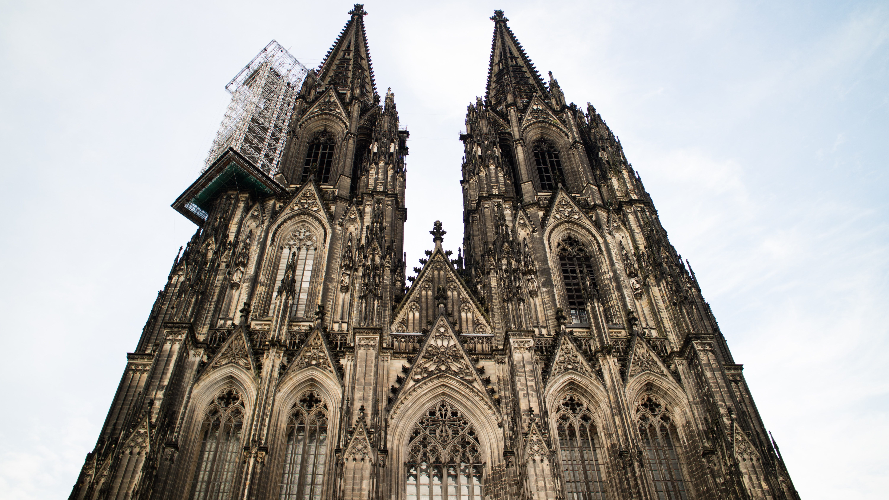
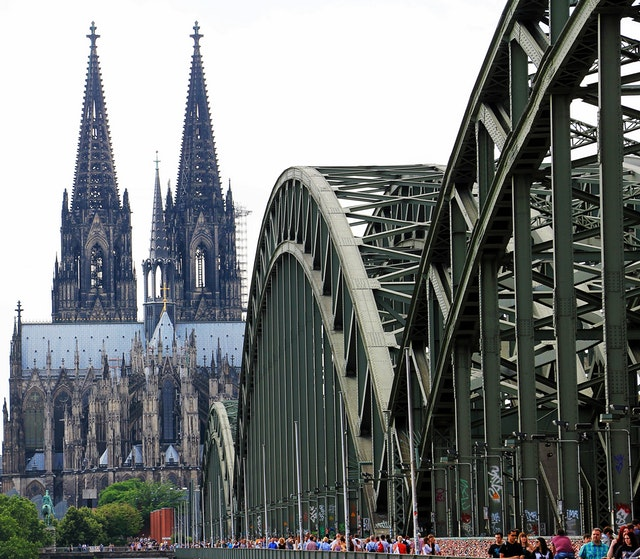
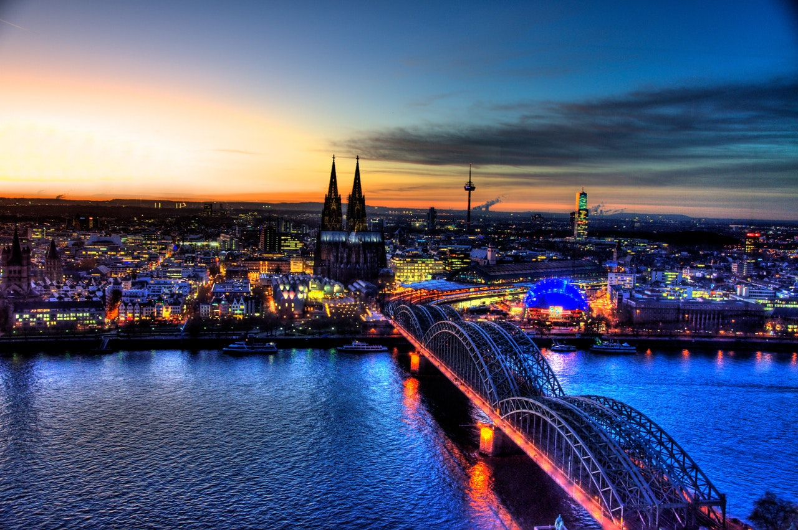

Kölner Dom

Der Kölner Dom (offiziell: Hohe Domkirche Sankt Petrus) ist eine römisch-katholische Kirche in Köln unter dem Patrozinium des Apostels Petrus.[1] Er ist die Kathedrale des Erzbistums Köln sowie Metropolitankirche der Kirchenprovinz Köln.
Der Kölner Dom ist eine der größten Kathedralen im gotischen Baustil. Sein Bau wurde 1248 begonnen und erst 1880 vollendet. Einige Kunsthistoriker haben den Dom wegen seiner einheitlichen und ausgewogenen Bauform als „vollkommene Kathedrale“ bezeichnet.[2]
Ursprünglich als repräsentative Kathedrale der Kölner Erzbischöfe und monumentales Reliquiar[3] für die Gebeine der heiligen drei Könige geplant, galt der Dom bei seiner Vollendung im 19. Jahrhundert als nationales Denkmal. Nach Ende des Zweiten Weltkriegs wurde der scheinbar unversehrte Dom inmitten der ausgebombten Stadt als „Wunder“[4] verstanden und zu einem emotionalen Symbol für den Lebenswillen.[5]
Heute gehört der Dom zu den meist besuchten Sehenswürdigkeiten Deutschlands und zählt seit 1996 zum UNESCO-Weltkulturerbe.
Der Kölntriangle

Der Kölntriangle (eigene Schreibweise: KölnTriangle) ist das zweithöchste Hochhaus im rechtsrheinischen Teil Kölns. Er wurde zwischen 2004 und 2006 fertiggestellt und vom Kölner Architekturbüro Gatermann+Schossig entworfen. Bekannt ist der Kölntriangle durch seine Aussichtsplattform und aus der Diskussion über das Kölner Hochhauskonzept.
Der Kölntriangle ist 103,20 Meter[1] hoch und hat 29 Etagen. Der Name Kölntriangle rührt vom Grundriss des Hochhauses her, einem Dreieck (engl. triangle) mit bogenförmigen Kanten, ähnlich einem Reuleaux-Dreieck. Der Kölntriangle wurde gemeinsam mit dem LVR-Horionhaus erbaut und ist auch mit ihm verbunden.
Das Museum Ludwig

Das Museum Ludwig ist das Museum der Stadt Köln für die Kunst des 20. und 21. Jahrhunderts und zählt heute zu den bedeutendsten Kunstmuseen Europas. Das unmittelbar südöstlich des Kölner Doms und des Hauptbahnhofs auf der Domplatte gelegene Museum beherbergt neben der größten Pop-Art-Sammlung Europas die drittgrößte Picasso-Sammlung der Welt, eine der wichtigsten Sammlungen zum deutschen Expressionismus, Schlüsselwerke der russischen Avantgarde und eine Sammlung zur Geschichte der Fotografie[1] mit ca. 70.000 Werken.[2] Das Museum verfügt über eine Ausstellungsfläche von rund 8.000 m². Im selben Gebäude befinden sich zudem die Kölner Philharmonie die Kunst- und Museumsbibliothek der Stadt Köln und das Filmforum NRW.
Die Hohenzollernbrücke
Die Hohenzollernbrücke ist eine Brücke über den Rhein in Köln in Höhe von Stromkilometer 688,5. Das von 1907 bis 1911 errichtete ursprüngliche Bauwerk bestand aus zwei Eisenbahn- und einer Straßenbrücke. Nach 1945 erfolgte der Wiederaufbau nur noch für zwei Eisenbahnbrücken, die später um eine dritte ergänzt wurden. Als Ersatz für die entfallene Straßenbrücke wurden die äußeren Eisenbahnbrücken um Geh- und Radwege ergänzt.
Bei der Hohenzollernbrücke und dem benachbarten Hauptbahnhof handelt es sich um einen der wichtigsten Knotenpunkte im deutschen und europäischen Eisenbahnnetz. Das Bauwerk gehört als fester Bestandteil zum Stadtbild von Köln und dem Kölner Dom.
Mit 1220 Zugfahrten pro Tag ist sie die meistbefahrene Eisenbahnbrücke Deutschlands.[2] Das Bauwerk gilt, zusammen mit dem Kölner Hauptbahnhof, als zentraler Engpass im Schienenverkehr in der Region Köln.[3]
Historische Altstad
Historische Altstadt Der Stadtteil Altstadt-Nord bildet zusammen mit der Altstadt-Süd die Mitte der Stadt. Beide Stadtteile werden durch die Kölner Ringe, die das mittelalterliche Stadtgebiet halbkreisförmig umschließen, zur Neustadt hin begrenzt. Der im Osten liegende Rhein begrenzt das Gebiet zu Deutz hin. Die Ostwestachse Cäcilienstraße – Neumarkt – Hahnenstraße stellt die Grenzlinie der beiden Altstadtteile dar.Politisch gehören die beiden Altstadtteile dem Stadtbezirk Innenstadt an. Im aktuellen Sprachgebrauch wird oft unter „Altstadt“ nur das Viertel um Gross St. Martin verstanden. Dieses Viertel war zur Römischen Zeit allerdings das Hafengelände und somit eben nicht das älteste Siedlungsgebiet der Stadt.
Der Stadtteil Altstadt-Nord gilt als die Keimzelle der Stadt; als eine Siedlung existierte er bereits vor dem Jahre 50, in dem die Stadt zur Colonia Claudia Ara Agrippinensium erhoben wurde.
Inmitten des Stadtteils befindet sich der Dom, das als Weltkulturerbe geltende Wahrzeichen der Stadt Köln. Darüber hinaus gibt es weitere Sehenswürdigkeiten wie das Rathaus, zahlreiche Museen, das Zeughaus, romanische Kirchen und viele historische Bürgerhäuser. Diese sind zum Teil nach dem Zweiten Weltkrieg gebaute Rekonstruktionen, wie das Stammhaus von 4711 in der Glockengasse 4.
Im Norden des Stadtteils lag an der gleichnamigen Straße das 1838 fertiggestellte Gefängnis „Klingelpütz“, wo sich in der NS-Zeit die zentrale Hinrichtungsstätte für die Sondergerichte des Rheinlandes befand. Es wird geschätzt, dass dort über 1000 vom Reichsgericht und Volksgerichtshof zum Tode Verurteilte unter dem Fallbeil starben. Nach dem Bau der JVA Köln in Ossendorf wurde das über 130 Jahre alte Gefängnis gesprengt und der Schutt zu einem Hügel zusammen geschoben. Auf dem Areal befindet sich heute der Klingelpützpark. Ein weiterer Inbegriff der NS-Schreckensherrschaft war die Gestapo-Zentrale im sogenannten EL-DE-Haus am Appellhofplatz 23–25/Ecke Elisenstraße. Dort ist seit 1988 das NS-Dokumentationszentrum der Stadt Köln. Ihm direkt gegenüber liegt das Justizgebäude am Appellhofplatz, das – 1893 als Nachfolgebau des Rheinischen Appellationsgerichtshofs fertiggestellt – das älteste und traditionsreichste Gerichtsgebäude der Stadt ist. Der "Appellhof" ist heute Sitz des Verwaltungsgerichts Köln sowie des Finanzgerichts Köln.
Das Schokoladenmuseum
Das Schokoladenmuseum Köln ist ein kulturgeschichtliches Spezialmuseum für Schokolade im Kölner Stadtteil Altstadt-Süd. Das auf einer Halbinsel im Rheinauhafen gelegene Ausstellungsgebäude beherbergt unter anderem eine Sammlung zur Geschichte der Schokolade und eine Dauerausstellung zur modernen Schokoladenproduktion.Geschichte
Gründer des Museums war der Kölner Schokoladenfabrikant Hans Imhoff. Die ihm mehrheitlich seit Januar 1972 gehörende Stollwerck AG[1] war einer der führenden, historisch wichtigen Schokoladenhersteller weltweit. Sie besaß einen umfangreichen Fundus an Exponaten, die beim Umzug im Dezember 1975 in den neuen Standort Köln-Westhoven dem Firmeninhaber auffielen. Er kam auf die Idee, ein Schokoladenmuseum zu errichten, wo diese Exponate besser aufgehoben waren. Beim Umzug der Firma Stollwerck nach Köln-Westhoven sorgte er zudem dafür, dass ein umfassender Bestand an Geschäftsschriftgut und Fotos, der die Geschichte des Unternehmens und der Unternehmerfamilie Stollwerck dokumentiert, sowie zahlreiche Exponate erhalten blieben.
Mit seiner Idee des Museums stieß er zunächst auf Skepsis. Er ließ sich aber auf ein Experiment ein, in dem er zum 150. Geschäftsjubiläum der Firma Stollwerck vom 8. Juli bis 20. August 1989 eine Ausstellung im Kölner Gürzenich ausrichtete und einen bereits legendären Schokoladenbrunnen präsentierte. Zu der Ausstellung kamen dann innerhalb von sechs Wochen mehr als fünfmal so viele Besucher wie er zur Bedingung gemacht hatte.[2] Gebaut wurde das Museum unabhängig von den Produktionsstätten als erstes Gebäude im neuen Stadtquartier Rheinauhafen durch den Architekten Fritz Eller.
Hans Imhoff plante die Einrichtung dieses Schokoladenmuseums ab Oktober 1991. Dem Kaufvertrag vom 23. Januar 1992 zufolge erwarb Imhoff von der Eigentümerin des Areals, der Häfen und Güterverkehr Köln, die Halle 10, das Preußische Zollamt (1898), den Malakoffturm und die Drehbrücke. Es besteht zudem aus einem bis Oktober 1993 fertiggestellten Neubau, dessen Form postmoderne Schiffsmotive symbolisiert. Die Eröffnung des Schokoladenmuseums fand am 31. Oktober 1993 statt.[3] Die Baukosten des heute noch in seiner Art einzigen Museums betrugen 53 Millionen DM.[4]
Hans Imhoff verkaufte 2002 Stollwerck an die Barry Callebaut AG. 2006 beendete das Management von Barry Callebaut die Zusammenarbeit mit dem Schokoladenmuseum und Lindt & Sprüngli wurde neuer Partner des Museums. Der Name des Museums wurde daraufhin von Imhoff-Stollwerck-Schokoladenmuseum in Imhoff-Schokoladenmuseum geändert.[5]Ausstellung
Schokoladenbrunnen
In der Ausstellung wird die gesamte Geschichte der Schokolade gezeigt, von ihren Anfängen bei den Olmeken, Maya und Azteken bis zu den heutigen schokoladehaltigen Produkten und ihren Herstellungsmethoden. Auf der 4.000 m² umfassenden Ausstellungsfläche ist eine Miniaturproduktionsanlage installiert, die dem Besucher die Funktionsweise der industriellen Schokoladenherstellung demonstriert.[6]
Ein begehbares Tropenhaus – ein Glaskubus mit einer Kantenlänge von 10 Metern – zeigt Kakaobäume der Arten Theobroma cacao und Theobroma grandiflorum. Einige Produktionsanlagen wurden miniaturisiert nachgebaut, denen man beim Herstellungsprozess kleiner Schokoladentafeln, die am Eingang an die Besucher verteilt werden, zuschauen kann. Eine besondere Attraktion ist der drei Meter hohe Schokoladenbrunnen, an dem von einer Mitarbeiterin des Museums Waffeln in die flüssige Schokolade getaucht und an die Besucher verteilt werden. Im Eingangsbereich des Museums befindet sich ein Shop mit Schokolade und Pralinen aller Art mit dem Schwerpunkt auf Lindt-&-Sprüngli-Produkten.
Kostbare Sammlungsstücke sind Porzellane und Silberschalen des 18. und 19. Jahrhunderts und Stücke aus dem vorkolumbischen Mesoamerika zum Trinken von Schokolade. Des Weiteren sind historische Maschinen und Hohlformen zum Guss von Schokoladenfiguren ausgestellt. Ferner wird eine Sammlung historischer Schokoladen-Verkaufsautomaten gezeigt.
Das Museum befindet sich in der Kölner Innenstadt auf der Rheinauhalbinsel im Rheinauhafen. Es ist mit jährlich 4000 Führungen und 650.000 Besuchern das meistbesuchte Museum Kölns und zählt zu den zehn meistbesuchten deutschen Museen. Der Betrieb des Museums benötigt keine Zuschüsse, wozu auch eine eigene Marketingabteilung beiträgt. Es wird als Veranstaltungsort durch die Schokoladenmuseum Gastronomie GmbH genutzt.